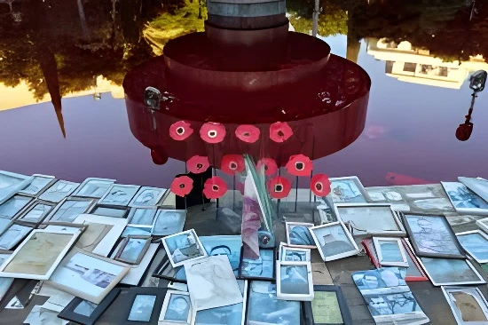

Mercredi 7 octobre 2026, Israël a marqué le troisième anniversaire de l'attaque du Hamas, qui a fait 1 221 morts selon l'AFP et conduit à l'enlèvement de 251 personnes. Une minute de silence a retenti à 6 h 29, des cérémonies ont eu lieu sur les lieux des massacres, et c'est la première fois qu'aucune famille n'attend plus le retour d'un otage. L'anniversaire intervient vingt jours avant des législatives disputées, au moment où le cessez-le-feu de Gaza, en vigueur depuis un an, peine à franchir sa seconde phase.
Mercredi 7 octobre 2026, Israël a observé le troisième anniversaire de l'attaque du Hamas. Comme chaque année, une minute de silence a retenti à 6 h 29, l'heure exacte où l'assaut a commencé en 2023, et des cérémonies ont eu lieu sur les lieux attaqués : le site du festival Nova près de Réïm, le kibboutz Kfar Aza et la colline de Nahal Oz. La cérémonie officielle de l'État, fixée selon le calendrier hébraïque, s'était tenue dès le 5 octobre, et Benjamin Netanyahu avait déposé une gerbe au cimetière du mont Herzl, à Jérusalem.
Le soir, des dizaines de milliers de personnes se sont réunies au parc Yarkon, à Tel-Aviv, pour la cérémonie nationale organisée par les familles de victimes et de rescapés, animée notamment par l'ancien otage Eli Sharabi. Selon la presse israélienne, des ministres du gouvernement ont boudé l'événement, tandis que des dirigeants de l'opposition y ont assisté. Dans la journée, des manifestants hostiles au gouvernement avaient brièvement bloqué l'autoroute Ayalon à 6 h 29 et teint en rouge l'eau de la fontaine de la place Dizengoff.
D'après l'AFP, l'attaque du 7 octobre 2023 a fait 1 221 morts, et 251 personnes ont été enlevées et emmenées à Gaza, dont 44 corps. Les décomptes varient légèrement selon les sources. La France, elle, déplore 51 ressortissants tués. Les bilans par site restent d'une extrême gravité : au festival Nova, 378 personnes ont été tuées et 44 prises en otage, selon le Times of Israel, quand d'autres médias citent 364 ou plus de 370 morts.
| Lieu | Bilan |
|---|---|
| Festival Nova (Réïm) | 378 morts, 44 otages |
| Base de Nahal Oz | 53 soldats tués, 10 enlevés |
| Commissariat de Sdérot | 20 policiers tués |
| Ensemble de l'attaque | 1 221 morts, 251 enlevés |
Ce troisième anniversaire est le premier depuis l'attaque où aucune famille israélienne n'attend le retour d'un otage, vivant ou mort. Les restes du dernier otage encore retenu à Gaza ont été récupérés en janvier 2026. Le souvenir reste vif pour les familles et pour l'armée : des soldates chargées de la surveillance avaient alerté sur des entraînements du Hamas avant l'attaque, et certaines estiment que leurs avertissements ont été ignorés en raison de préjugés sexistes.
Élections législatives en Israël, les premières depuis l'attaque.
Troisième anniversaire, cérémonies et manifestations.
Le Board of Peace présente un plan de reconstruction de Gaza de 2,45 milliards de dollars.
Le Hamas accepte un cadre de désarmement, qu'il conditionne à un retrait israélien.
Les restes du dernier otage sont restitués.
Entrée en vigueur du cessez-le-feu à Gaza.
Attaque du Hamas contre Israël, début de la guerre de Gaza.
Du côté palestinien, le bilan est incomparablement plus lourd. Selon le ministère de la Santé de Gaza, placé sous l'autorité du Hamas et dont l'ONU juge les chiffres fiables, plus de 74 200 personnes ont été tuées depuis le début de l'offensive israélienne, et au moins 1 400 depuis le cessez-le-feu du 10 octobre 2025. Les Nations unies estiment qu'environ 82 % des structures de la bande ont été endommagées, et près des deux tiers de ses 2,1 millions d'habitants vivent sous des tentes ou dans des abris de fortune.
Le jour de l'anniversaire, de nouvelles frappes israéliennes ont visé Gaza, malgré le cessez-le-feu, comme presque chaque jour depuis un an. Pour les Gazaouis, la date n'a pas le même sens : certains décrivent leur maison détruite comme « un cimetière », selon des témoignages recueillis par ABC News, quand le Hamas a qualifié la date de « jour glorieux » dans un communiqué.
Le cessez-le-feu né du plan américain a permis la libération des otages et un afflux d'aide, mais sa seconde phase reste largement bloquée. Fin juillet, le Hamas a accepté un cadre de désarmement avec le Board of Peace, mais il le lie à un retrait israélien qui n'a pas eu lieu. L'envoyé du Board, Nickolay Mladenov, répond que le désarmement n'est « pas négociable » et que le dispositif n'est « pas lié à un calendrier ».
La reconstruction attend donc. Le Board propose une première phase de 66 projets pour 2,45 milliards de dollars, dans un plan de relèvement estimé à 71,4 milliards sur dix ans, avec un démarrage prévu en 2027. L'armée israélienne contrôle plus de la moitié de l'enclave, et, selon ABC, Benjamin Netanyahu a ordonné en mai d'étendre ce contrôle à 70 % du territoire.
« Nous n'oublierons pas ; nous exigerons la vérité. »
— Einav Zangauker, mère d'un ancien otage, 7 octobre 2026 (traduction)L'anniversaire tombe vingt jours avant les législatives du 27 octobre, les premières depuis l'attaque. Les sondages donnent un scrutin serré : selon les enquêtes, le Yashar de Gadi Eisenkot talonne ou devance le Likud de Netanyahu, aucun des deux blocs n'approchant les 61 sièges nécessaires. Netanyahu et ses ministres jugent qu'une commission d'enquête d'État ne doit venir qu'après la guerre ; le procureur général a suggéré, le 19 août, de la confier au prochain gouvernement. Lors de la cérémonie de Tel-Aviv, l'appel d'un des organisateurs à une telle commission a été salué par de longs applaudissements.
Le Conseil de sécurité nationale israélien a demandé aux Israéliens à l'étranger une « vigilance accrue », en raison d'un risque d'attaques contre des Israéliens et des Juifs, et le ministre de la Défense, Israel Katz, a placé l'armée en alerte maximale. En France, le préfet du Rhône a interdit une manifestation propalestinienne près de Lyon ; à Londres, un rassemblement a réclamé la fin de la guerre à Gaza.
Trois ans après, le 7 octobre est à la fois un deuil national, une plaie politique et le point de départ d'une guerre qui a ravagé Gaza. Pour les familles israéliennes, la question n'est plus celle des otages mais celle de la vérité sur les failles de l'État ; pour les Palestiniens, celle d'une reconstruction suspendue à un désarmement et à un retrait que chaque camp lit à sa manière. À trois semaines d'un scrutin décisif, aucune des deux mémoires ne semble prête à céder à l'autre, et le cessez-le-feu, un an après sa signature, tient plus par l'usure que par un accord politique.